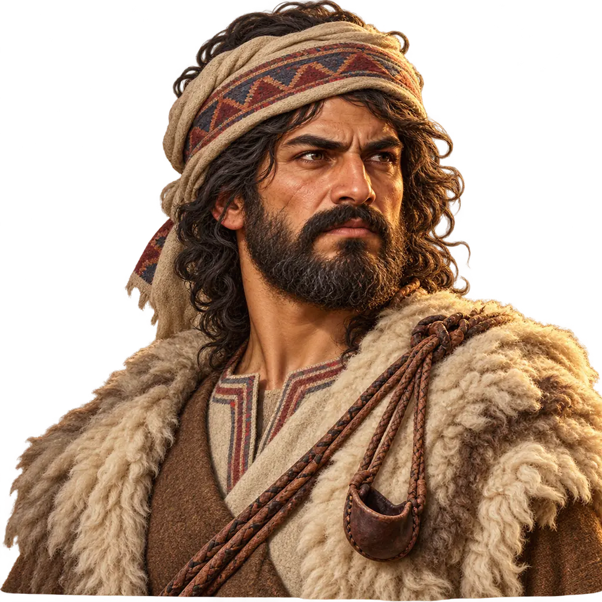
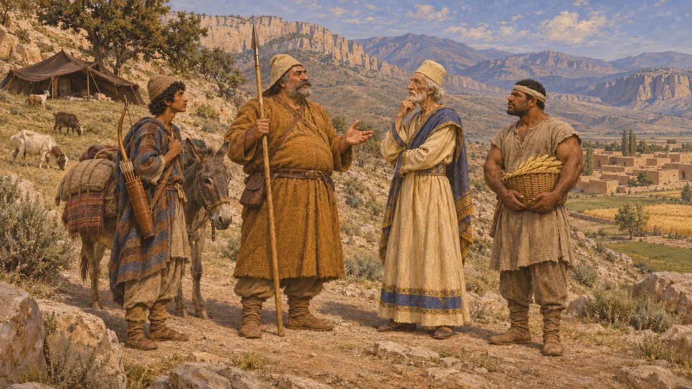
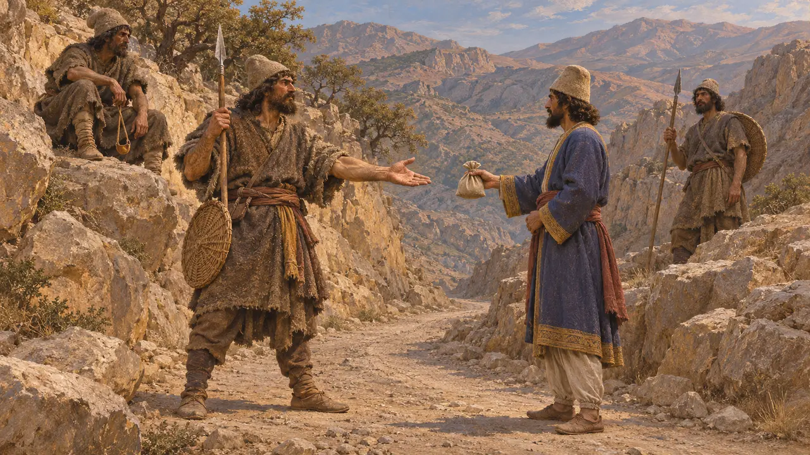
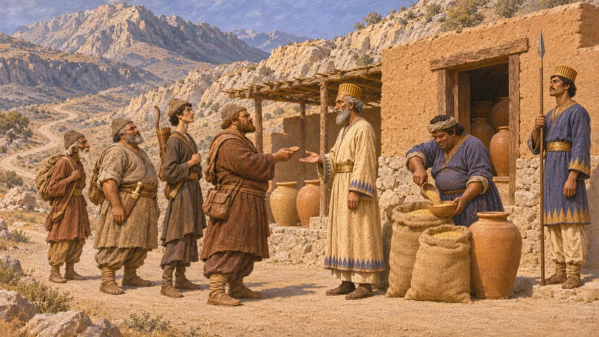
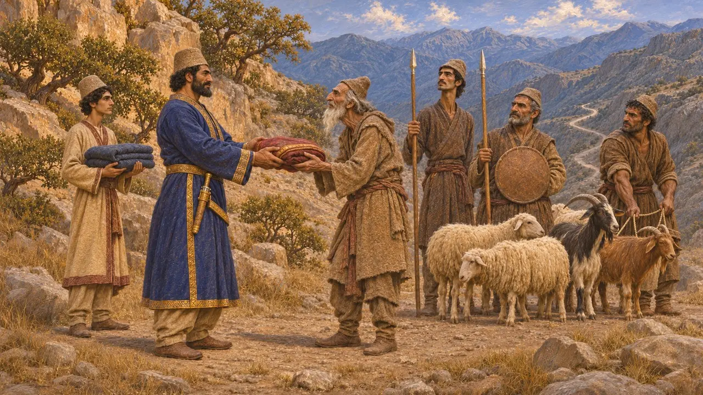

Enzyklopädie › Soldaten und Schiffe

Bergräuber
Leicht bewaffnete Plünderer aus den Bergen und Randgebieten des Reiches, 6.–5. Jahrhundert v. Chr.
Die persischen Könige herrschten über besiedelte Ebenen und Täler, doch in den Bergen dazwischen lebten Hirtenvölker, die sich zum Teil von Raubzügen und Wegzöllen ernährten. Griechische Autoren schildern solche Gruppen, vor allem die Uxier, Marder und Kossäer, als Räuber, meist in Berichten über die Feldzüge Alexanders. Sie waren von Bedeutung, weil die Straßen des Königs durch ihr Land führten, und seine Beamten begegneten ihnen mit Gewalt, Zahlungen oder Verhandlungen.
Im Spiel: Das Spiel nutzt den Bergräuber als schnellen, leichten Gegner, der je nach Stufe umbenannt wird, Bogenschützen und Zivilisten niederreitet und Speerträgern unterliegt. Das vereinfacht die Geschichte: Mit den Bergvölkern wurde oft eher verhandelt als einfach gekämpft.

Herodot über die Stämme der Persis
Antiker BerichtHerodot zählt die Völker der Persis auf und teilt sie in führende Stämme, Ackerbauern und Nomaden ein. Als Hauptstämme nennt er die Pasargaden, Maraphier und Maspier, als Nomaden die Daer, Marder, Dropiker und Sagartier. Von Raubzügen berichtet er an dieser Stelle nichts, doch seine Liste zeigt, dass die Persis selbst kein einheitliches Volk war.
Herodotus 1.125

Die Uxier und der Preis des Passes
Antiker BerichtArrian berichtet, dass die Uxier des Tieflands dem persischen Satrapen gehorchten, die Uxier der Berge jedoch nicht. Als Alexander um 331 von Susa nach Persis zog, besetzten die Bergbewohner den Pass und verlangten die Zahlung, die ihnen die persischen Könige angeblich stets geleistet hatten. Alexander griff sie über einen Umweg an und legte ihnen einen Tribut in Vieh auf. Strabon fügt hinzu, dass die Kossaier Geschenke von den Königen erhielten, die zwischen Ekbatana und Babylon reisten.
Arrian, Anabasis 3.17; Strabo, Geography 11.13.6

Bewachte Straßen, zugeteilte Rationen
Zeitgenössisch belegtDie Persepolis-Festungstäfelchen, zwischen etwa 509 v. Chr. und 493 v. Chr. auf Elamisch geschrieben, verzeichnen Reisende auf den Straßen der Persis. Sie erhielten an Stationen Rationen gegen gesiegelte Berechtigungen, oft in Gruppen unter einem namentlich genannten Anführer. Die Täfelchen zeigen ein streng verwaltetes Kernland. Bergräuber nennen sie nicht, daher bleibt offen, wie weit abgelegene Berggruppen innerhalb oder außerhalb dieses Systems standen.
R. T. Hallock, Persepolis Fortification Tablets, 1969

Schwäche oder Handel
UmstrittenGriechische Autoren der römischen Zeit deuteten die Zahlungen der Könige an Bergvölker als Zeichen, dass das Reich seine eigenen Berge nicht beherrschen konnte. Pierre Briant vertrat dagegen die Ansicht, die Gaben seien Teil einer dauerhaften Beziehung von Austausch und Anerkennung gewesen, in der Hirten Tiere und Kämpfer stellten und der König die Pässe offenhielt. Die Historiker sind sich bis heute uneins, wie weit diese Gruppen Feinde und wie weit sie Partner der Krone waren.
P. Briant, État et pasteurs au Moyen-Orient ancien, 1982; P. Briant, From Cyrus to Alexander, 2002
Quellen
- Arrian, Anabasis 3.17
- Strabo, Geography 11.13.6
- Herodotus 1.125
- P. Briant, From Cyrus to Alexander, 2002
- P. Briant, État et pasteurs au Moyen-Orient ancien, 1982
- R. T. Hallock, Persepolis Fortification Tablets, 1969